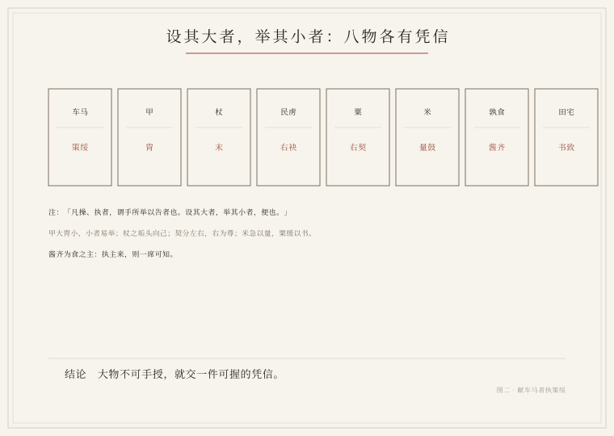

曲礼上 · 一·八十九 · 第 87 课
献大物不能尽举，故执其小者以呈：献车马执策与绥，献甲执胄，献杖执末，献民虏操右袂，献粟执右契，献米操量鼓，献熟食操酱齐，献田宅操书致。一句话：设其大者，举其小者。
说什么事：献车马者执策绥，献甲者执胄，献杖者执末，献民虏者操右袂，献粟者执右契，献米者操量鼓，献孰食者操酱齐，献田宅者操书致。
落在哪一层：仪。所举者，物之凭信。
为何编在此位：上节献鸟，此节献大物。由小而大，献遗之仪渐备。
【经】獻車馬者執策綏，獻甲者執胄，獻杖者執末，獻民虜者操右袂，獻粟者執右契，獻米者操量鼓，獻孰食者操醬齊，獻田宅者操書致。
【注】凡操、執者，謂手所舉以告者也。設其大者，舉其小者，便也。甲，鎧也。胄，兜鍪也。民虜，軍所獲也，操其右袂制之。契，券要也，右為尊。量鼓，量器名。
策绥 疏「策是马杖，绥是上车之绳」。车马不上于堂，故执此二物呈之。注《释文》「绥音虽，执以登车者」。
胄 注「兜鍪也」。甲大胄小，小者易举。
末 疏「末，柱地头也。柱地不净，不可向人，故执以自向，持净头投与人」。
民虏 注「军所获也」。疏「征伐所获彼民以为外虏」。操右袂，疏「右边有力，故此用右手以防其异心」。
右契 注「契，券要也，右为尊」；疏「契谓两书一札，同而别之……以先书为尊」。
量鼓 注「量器名」；疏引《隐义》「东海乐浪人呼容十二斛者为鼓」，又「米可即食为急，故言量；粟可久储为缓，故云书」。
酱齐 疏「酱齐为食之主，执主来，则食可知」。
书致 疏「图书于板，丈尺委曲书之，而致之于尊者」。田宅著土，不可动，故以书致。
献车马的，执马鞭与登车之绳呈上；献甲的，执头盔；献杖的，执杖的下端；献俘获之民的，操其右袖；献粟的，执券契的右半；献米的，执量器；献熟食的，执酱齑；献田宅的，执书契。
一节八事，一法贯之：大物不能搬，就举其可举者以代表。注八字最要——「设其大者，举其小者」。礼在这里解决一个实务问题，同时把「凭信」交给了手。
第一层 举小以代大 车马、甲、田宅皆非可手授之物。执其小者，是给受者一个可握的凭据。
第二层 各取其便 甲大胄小，故取胄；杖之净头向人、垢头向己；俘虏操右袂以便制。每一条都以「便」与「安」为断。
第三层 契与书 粟执右契，米操量鼓，田宅操书致。缓急不同，凭信之具亦不同：米急故以量，粟缓故以书。
第四层 酱齐为主 熟食繁多，独执酱齑。疏说「执主来，则食可知」——以一味代表一席，与执策绥同一法。
与今日何干 送车送房，交的是钥匙与合同；送一桌菜，先说的是「有酒有酱」。凭信之物，古今同理。
| 左 | 右 |
|---|---|
| 献车马执策绥 | 车马不上堂，执鞭与绳呈之 |
| 献甲执胄 | 甲大胄小，小者易举 |
| 献杖执末 | 垢头向己，净头向人 |
| 献民虏操右袂 | 右手操其右袖，制其异心 |
| 献粟执右契 | 券分左右，右为尊 |
| 献米操量鼓 | 米急，故以量器呈 |
| 献孰食操酱齐 | 酱为食之主，执主则食可知 |
| 献田宅操书致 | 田宅著土，以书契致之 |
画一案八物横列：马鞭与绳结、一顶兜鍪、一支杖（下端朝外、上端包布）、一片衣袖、半枚券契（右半）、一只量器（鼓形）、一小碟酱、一卷木板文书。八物之间等距，案面素净。不画人、不写文字。赭色只在兜鍪顶缨与酱碟边。
